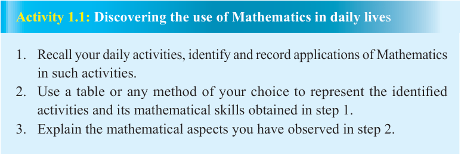

Arithmetic
Arithmetic is a branch of Mathematics that deals with properties and manipulations of numbers. Manipulation of numbers is achieved through the use of basic mathematical operations namely: addition, subtraction, multiplication, and division.
Algebra
Algebra is a branch of Mathematics in which arithmetic operations are applied to symbols rather than specific numbers. The symbols or letters in algebra are called variables which represent quantities with no fixed values.
Geometry
The word geometry was derived from the Greek word ‘Geo’, which means ‘earth’ and ‘metry’, which means ‘measurement’. Therefore, Geometry is a branch of Mathematics which deals with the study of the sizes, shapes, positions, angles, and dimensions of different physical objects. Moreover, properties of points, lines, planes, similarities, congruence, and shapes of different regular objects are also studied in Geometry.
Relationship between Mathematics and other subjects
Every aspect of our life makes use of Mathematics in one way or another. Mathematics plays a major role as a tool for effective understanding of other subjects. Numerous concepts in other subjects and fields are described precisely using Mathematics. Learning Mathematics can also benefit students through developing their problem solving and critical thinking skills. Note that, Mathematics formulas which are used to represent and describe concepts and scenarios in other fields are commonly referred to as mathematical models.

Activity 1.1: Discovering the use of Mathematics in daily lives
1. Recall your daily activities, identify and record applications of Mathematics in such activities.
2. Use a table or any method of your choice to represent the identified activities and its mathematical skills obtained in step 1.
3. Explain the mathematical aspects you have observed in step 2.
Mathematics and Agriculture
Agriculture is closely related to Mathematics. For instance, when farmers want to buy seeds, they need to understand the ratio of seeds that is sufficient per piece of land.